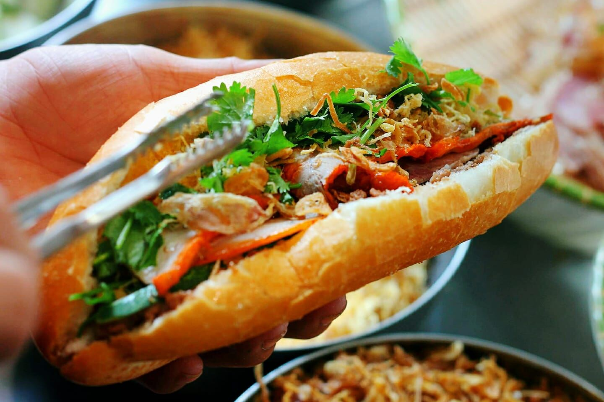

Bánh mì Việt Nam
1. Nguyên liệu chính của bánh mì Việt Nam được chia thành hai phần gồm vỏ bánh và phần nhân và xốt:

Nguyên liệu làm vỏ bánh:
- Bột mì
- Nước
- Men nở
- Gia vị cơ bản (Muối và đường)
- Chất hỗ trợ (Một ít giấm, vitamin C hoặc phụ gia)
Nguyên liệu làm nhân và xốt (đối với bánh mì kẹp truyền thống):
- Pate gan
- Thịt và chả
- Đồ chua
- Rau kèm
- Xốt bơ trứng & nước xốt
2. Bánh mì phổ biến khắp đất nước Việt Nam. Song mỗi vùng miền lại có những "thủ phủ bánh mì" riêng biệt với hương vị và cách biến tấu độc đáo:
- Thành phố Hồ Chí Minh (Sài Gòn) – "Cội nguồn" của bánh mì kẹp thịt
- Hải Phòng – Thiên đường của Bánh mì cay (Bánh mì que)
- Hà Nội – Độc đáo với Bánh mì chảo và Bánh mì Dân tổ
- Đà Lạt (Lâm Đồng) – Bánh mì xíu mại chén
- Khánh Hòa (Nha Trang) – Bánh mì chả cá và Bánh mì "Không bơ"
Bánh mì không chỉ là một món ăn nhanh tiện lợi, mà từ lâu đã trở thành một biểu tượng văn hóa, một đại sứ ẩm thực đầy tự hào của người Việt Nam.
Xem thêm